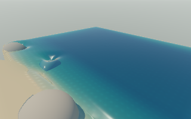
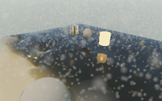
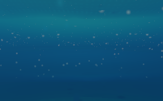

2026-11-08 · macOS, AMD Radeon Pro 560X · Deno 2.9.8 / Rust wgpu / Metal.
The current live sand lab runs in a native desktop window. This first port is slower than the browser here, so it remains optional. It is not Electron: graphics and compute use native wgpu. Existing JavaScript/WebAssembly simulation, scene logic, Gaussian/SH shaders and controls are shared. Native Cocoa/Win32 handles window/input; a lightweight DOM adapter and native canvas draw the controls. CPU physics has not been rewritten in Rust.
Same starting beach: 640 × 400 viewport, 320 × 200 scene targets, resolution 1, 1,164 initial water markers, wind 5, CPU-reference water physics with the existing GPU visual/air work. Both runs recorded 80 displayed frames; first 12 excluded. FPS uses displayed-frame intervals; realtime uses actual simulated time divided by elapsed wall time. Jobs ran sequentially. These are short runs on this machine, not long-term or Windows performance guarantees. Different throughput advances the scene at different rates.
| Host | Average FPS | Realtime | p95 frame interval | Observed loss/error |
|---|---|---|---|---|
| Browser WebGPU | 12.88 | 1.000× | 113.2 ms | None |
| Native wgpu window | 5.55 | 0.740× | 203.6 ms | None |
Summary and method · Native frame samples · Browser frame samples. An earlier shorter browser run measured 16.99 FPS / 1.003× (measurement-window rounding); it is not the equal-frame comparison above.
The optional connected GPU solver also runs and validates natively. A separate 48-frame headless native run measured 2.24 FPS / 0.150× after warm-up, so CPU water remains the default on this AMD host. Raw GPU-path run. RTX selects the validated GPU path; Windows performance is unmeasured.

Both images use the same visualization of the linear scene buffer (before exposure and UI). Across 64,000 pixels, mean absolute RGB difference is 0.0000957; 0.075% of RGB components differ by more than 0.01. Maximum difference is 0.596 at localized edges; this is close visual agreement, not pixel identity. No non-finite samples. The browser preview and native-rendered captures were inspected. Image comparison.


Deno's queue-completion binding blocks in device polling and includes a 10 ms sleep; buffer mapping has similar polling. This serializes work that the browser can overlap. The native adapter also exposes a 32-byte color-attachment limit, requiring extra depth-free MRT draws while preserving full precision. Native GPU timestamps are unavailable on this runtime/adapter. These are concrete profiling leads, not a measured attribution of every millisecond.
Next: an asynchronous native completion bridge or a focused direct Rust host comparison, native timestamp support and pass-cost profiling, then removal of remaining CPU water mirrors. Keep feature parity and workload limits. Do not loosen solver accuracy or drop scene layers to conceal the regression.
The native port covers the shared live beach. Historical material/fountain/pipe snapshots and standalone fluid-field experiments remain browser archives. Windows source support is included but not exercised; signed packaging, hot reload, accessibility and saved-state import/export across hosts remain future work. Browser saves are untouched.
npm run start:native starts paused. See native/README.md for requirements, controls, bounded checks and reproduction commands. The browser stays available through npm run dev.